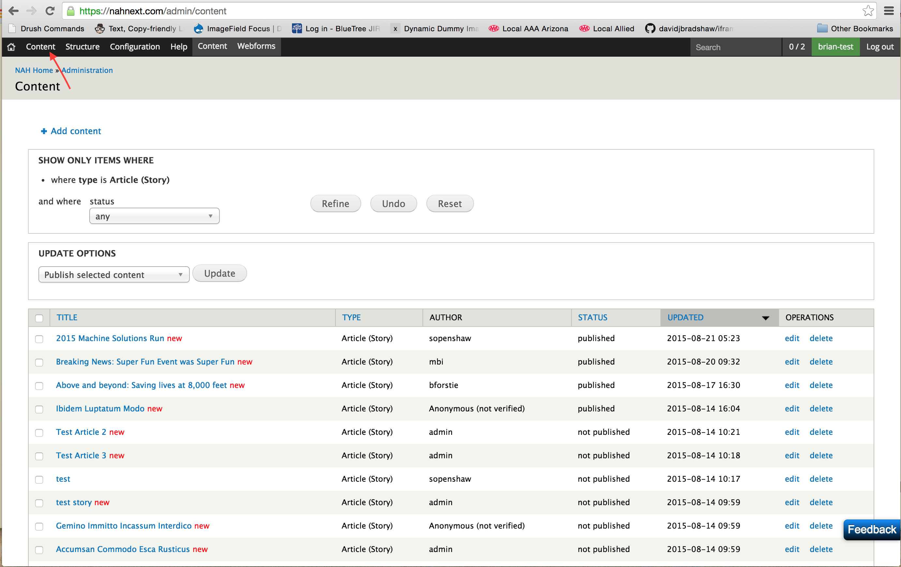
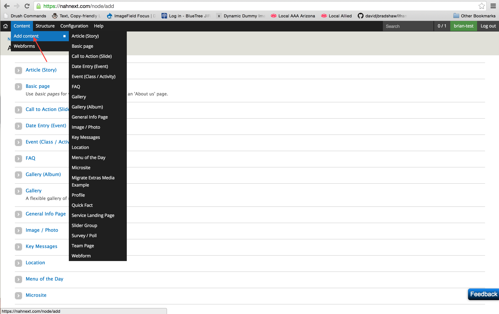
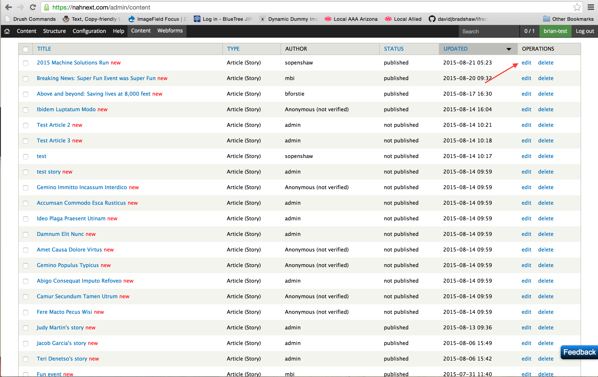

Drupal Bootcamp
An introduction to thinking in Drupal
Brian Seek / brian.seek@gmail.com
Welcome to Drupal
Today we are going to get to know Drupal from a relatively high level.
Words to know
Speaking in Drupal.
User
The person viewing the site. Internal or external.
In Drupal all non-logged in visitors to your site are considered Anonymous Users.
Content
Content is everything!
Content can be text, an image, a video, or any thing else that is created for the user to consume.
+ + + + +
Field
Fields are containers for specific kinds of content.
Content Type
A content type is a specifically defined template for content.
You will not create content types
Node
An individual instance created from a content type
You will create nodes.
In general individual pages will be individual nodes.
Block
Blocks contain data that don't fit in the mold of a content type.
There are a few kinds of blocks:
- admin created
- system
- code generated
You will not be creating new blocks.
Taxonomy
Taxonomy is Drupal's way of organizing like content. It allows you to connect, relate and classify your website’s content.
This allows us to group content(nodes) together and aids in search and aggregation.
Drupal calls Taxonomy categories Vocabularies
Term
A Term is a child of a Vocabulary. Where "Dogs" would be the name of a Vocabulary, "German Shepherd" would be the term.
Terms will be added to individual nodes via a field.
Entity
Entities are Nodes, Vocabularies, Users or any other object that fits the framework. The entities you will encounter most often are Nodes.
Module
In Drupal a module consists of code that performs a specific function. Drupal itself is just a collection of modules known as core modules. We use and write modules to extend the functionality of your Drupal site.
Views
Views is a module that allows us to make dynamic pages on the fly. These pages won't be associated with a single node and will not be editable from a singular place.
You will not be required to create or edit a view but knowing a bit about what they are will help you navigate around and update content that they are showing.
Frontend
The frontend is considered everything that you see and interact with from a web broweser.
Backend
The backend is what generates the data that you see in the front end.
How to find content
Navigating the content admin screen.
How to create content
Creating nodes.
How to edit content
Updating existing content.
Database vs. Code
The elements of a Drupal site can be split into two distinct groups: Database & Code
Database
An easy way to think of this is that anything that you update in the web-admin area of the site is saved in the database. This includes content.
Everything that you do on the site will be saved in the database.
Code
Code includes all of the modules for the site as well as the theme for the site.
You will never have to write any code.
Multi Tiered Enviroment
Dev Stage Production
Flow
Code
Dev - Stage - Production
Datebase
Code
Code is saved in a a version control system. We develop code on the Dev server. When we are done, that version gets picked up on the Stage server where it gets tested for functionality by both BlueTree and NAH. If all looks good, the new version of the codeset is pulled on to the Production server and is live to the world
Having the code in version control allows us to track changes over time and if necessary we can roll back code changes to a previous point in history.
Database
The database does not flow in the same direction as code does. The database originates from the Production server and is never overwritten. When new code is to be written, a current snapshot of the database is sent to the Dev server and then stays in that state until updated again. The database is not stored in version control, it is protected in a backup system.
Resources
Help is out there
Questions?
The End
Thank You!
You can revisit this slide presentation at http://brianseek.github.io/